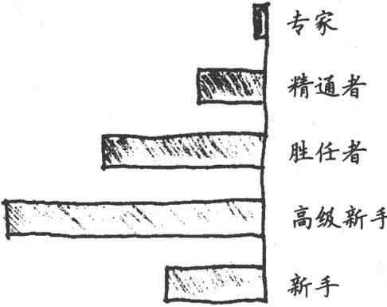

第2章 从新手到专家的历程
制造问题的思维方式无法用来解决问题。
——阿尔伯特·爱因斯坦
难道你不想成为专家吗？不想凭直觉就知道问题的正确答案吗？这是我们一起探索旅程的第一步。在本章中，我们将看一看什么是新手，什么是专家，以及从新手变成专家需要经历的各个阶段。让我们出发吧。
从前，有两名研究人员（兄弟俩）想要推动人工智能的技术发展水平，准备编写一个能够像人类一样学习和获取技能的软件（或者证明这根本不可行）。为了实现这个目标，他们首先得研究人类是如何学习的。
他们提出了德雷福斯技能获取模型〔1〕，概括了从新手到专家必须经历的5个阶段。这个模型已经被证实是行之有效的，接下来我们将深入探讨它。
让我们回到20世纪80年代初，当时美国的护理专业人员使用德雷福斯模型纠正她们的工作方法，帮助她们提高专业技能。那时，护士们面对的问题与我们如今在软件开发领域面对的许多问题都是相同的。她们现在已经取得了巨大的进步，而我们还要继续努力。
事件理论与构建理论
德雷福斯模型是所谓的构建理论。理论分两种：事件理论和构建理论*。这两种理论都用于解释我们观察到的现象。
事件理论可以被测量，这类理论可以被验证或证明。你能够判断某个事件理论的准确性。
构建理论是无形的抽象，无法被证明。构建理论是通过它的用处来衡量的。你无法判断某个构建理论准确与否。它是客观存在和抽象的结合体。就像苹果是存在的，苹果是事物，存在则是抽象。
例如，我可以使用简单的电流或者复杂的医学成像设备来证明大脑的所有部件，但是我无法证明你有思维。思维是一种抽象，事实上没有这种客观事物，只是一种概念，但是它是一种非常有用的概念。
Dreyfus模型是一种构建理论，是一种抽象。我们随后将看到，它非常有用。
下面列举了一些人们观察到的现象，适用于护理和软件开发，也可能适用于其他行业。
□ 实际工作中，专家级职员并不总被认为是专家，也没有拿到相称的薪水。
□ 不是所有专家级职员都想成为管理者。
□ 职员的能力存在巨大的差异。
□ 管理者的能力存在巨大的差异。
□ 任何团队的成员在技术水平上可能各不相同，无法看作一个同质的可替代资源集合。
除了更好、更聪明、更快，技术水平还有更多的内涵。德雷福斯模型描述了我们的能力、态度、素质和视角在不同的技术水平下是如何变化的，以及为什么会有变化。
这有助于解释为什么过去许多改进软件开发的办法会失败。德雷福斯模型建议我们采取一系列行动，切实改进软件开发行为——无论是为了个人还是为了整个行业。
下面让我们来看一看。
2.1 新手与专家
你如何称呼一名专家级软件开发人员呢？巫师。当我们遇到魔数、十六进制数据、僵尸进程和复杂的指令（比如tar -xzvf plugh. tgz或者sudo gem install --include-dependencies rails）时，他就会出现。
有了他，我们甚至可以转换成其他用户身份，或者切换到root用户——Unix世界最高权力的化身（见图2-1）。巫师们处理这些棘手的事情看起来易如反掌。眯起双眼，指尖一缕尘埃，口念咒语，“噗”的一声，一切问题解决了。虽然带有神秘的色彩，但是我们印象中特定领域的专家都是这种形象（他们是如此地神秘，带给我们的印象是如此地深刻）。
图2-1 Unix巫师
使工作看起来很轻松
曾经有一次，我有机会面试专业的风琴演奏者。对于试音环节，我选择了法国作曲家Charles-Marie Widor的Toccata片段（出自第5交响乐F小调，第42曲第一章），节奏非常快，我比较业余，感觉这节比较难。
一位候选者演奏得很好——两脚踏板，飞快转动，双手跃动，十指模糊，双眉紧锁，严肃专注。最后，她满头大汗。演奏太出色了，我被打动了。
但是随后真正的专家出现了。她弹得更好一些，更快一些，在她的双手和双脚灵活地演奏时，她一直微笑着与我们交谈。
她使演奏看起来很轻松，最终她得到了这份工作。
例如就专家级大厨来说，他们徜徉于面粉和香料的缭绕之中，不必关心越堆越高的脏盘子（这些都留给实习生清洗），大厨只要努力琢磨、清楚表达如何做好这道菜。“来一点这个，那个少点——不要太多，然后开始烹饪直到完成。”
厨师长克劳德这样说不是故意卖关子，他知道“烹饪直到完成”的含义。他知道“刚好够”和“太多”之间的细微区别依赖于湿度、肉的来源以及蔬菜的新鲜程度。
专家通常很难把他们的行为恰如其分地解释清楚，他们的很多行为是如此地熟练以至于已经变成无意识的了。他们的大量经验都是通过大脑的非语言、无意识区域存储的，这让我们难以观察，而专家则难以表述。
清晰表述专业技能十分困难。
It's hard to articulate expertise.
当专家在做事时，我们其他人觉得十分神奇。神秘的魔法看起来似乎无处可寻，当我们甚至还不完全认识问题的时候，专家就已经凭借一种不可思议的能力知道了正确的答案。
当然，这不是魔法，只是他们认识世界的方式、解决问题的方法、运用的思维模型等都和普通人显著不同。
而一个新厨师在辛苦工作一天回到家里后，可能不会关心湿度和原料方面的细微差别。他只想知道食谱中到底需要放入多少藏红花（不仅仅只考虑藏红花特别昂贵这个因素）。
他想知道的是，如果已知肉的重量，如何精确设定烤肉箱的定时器时间，等等。这并不是说他迂腐或者愚蠢，只是他需要明确的、与情境无关的指令，便于参照执行。而如果专家被强制遵从那些规则操作，他们的工作就会变得效率低下。
新手和专家有着根本区别，他们看待世界的方式不同，反应也不同。让我们看看细节。
2.2 德雷福斯模型的5个阶段
早在20世纪70年代，德雷福斯兄弟（休伯特和斯图尔特）就开始研究人类如何获取和掌握技能。
德雷福斯模型针对每项技能。
Dreyfus is applicable per skill.
德雷福斯兄弟考察了行业技术能手，包括商用客机飞行员和世界著名国际象棋大师〔2〕。他们的研究表明，从新手到专家要经历巨大的变化。在这个过程中，人们不只是“知道更多”或者获得了技术，而且还在如何认识世界，如何解决问题以及如何形成使用的思维模型等方面体验到根本性的区别。人们获取新技术的方式发生了变化，影响（促进或阻碍）人们工作业绩的外部因素也发生了变化。
不同于对整个人进行划分的其他模型或评估体系，德雷福斯模型具体针对每项技能。换言之，这是一个情境模型，而不是个性或能力模型。
对于所有的事情，你既不是“专家”也不是“新手”，你只是处于某个特定技能领域中的某个水平阶段。虽然你可能只是烹饪新手，但却可能是跳伞专家。大多数非残障成人在直立行走方面都是专家——无需计划或者思考。这已经变成了本能。大多数人在税务规划方面都是新手。如果提供足够多的明确指令，我们就能够完成它，但是事实上我们不知道那是怎么回事（不明白为什么这些规则如此神奇）。
让我们来看一看从新手到专家所经历的5个阶段。
2.2.1 阶段1：新手
专家
精通者
胜任者
高级新手
→新手
由定义可知，新手在该技能领域经验很少或者根本没有经验。这里提到的经验，指的是通过实施这项技术促进了思维的改变。举个反例，可能一个开发人员声称拥有十年的经验，但实际上只是一年的经验重复了九次，那么这就不算是经验。
新手非常在乎他们能否成功。没有太多经验指导他们，他们不知道自己的行为是对是错。新手不是特别想要学习，他们只是想实现一个立竿见影的目标。他们不知道如何应付错误，所以出错的时候，他们非常容易慌乱。
但是，如果给新手提供与情境无关的规则去参照，他们就会变得能干起来。也就是说，需要这种形式的规则：“当X发生时，执行Y。”换言之，需要一份指令清单。
图2-2 玉米饼食谱，不过你知道需要烹饪多长时间吗
这就是呼叫中心的工作原理。你可以雇用一大批对当前技术没有很多经验的人，然后让他们按照一个决策树按部就班地执行下去。
新手需要指令清单。
Novices need recipes.
一个大型计算机硬件公司可能使用下面这样的规则列表。
1．询问用户计算机是否接上了电源。
2．如果是，询问是否已供电。
3．如果否，请用户接电源，然后等待。
4．……
类似于上面这种乏味却固定的规则可以衡量新手的能力。当然，新手所面临的问题是，对于某种情境，不知道哪条规则是最相关的。当一些意想不到的事情发生时，他们就会不知所措。
和大多数人一样，我对于纳税申报一直知之甚少。我没有太多经验，尽管我已经填写申报文件超过25年了，我还是没有学到任何东西，也没有改变思维方式。我也不想学习，我只想实现目标——处理完今年的税务问题。我不知道如何面对错误。当国税局给我寄来简短且冷冰冰的表格时，我通常不知道表中各项目是什么意思，也不知道怎么处理它〔3〕。
当然，总有解决办法。可以求助于一个与情境无关的规则！类似于下面列出的步骤。
填写你去年赚的金额。
□ 寄给政府。
□ 简单而清楚。
指令清单（包含情境无关的规则）的问题在于你不能一五一十地将所有事情解释清楚。例如，玉米饼食谱中提到烹饪“大约20分钟”，那么我什么时候需要延长或者缩短时间？我如何知道已经做好了？你可以设立更多的规则去解释，然后再用更多的规则去解释刚设立的规则，没有一个实际的界限约定你需要说得多明白。这种现象被称为无限递归（infinite regression）。因此，你必须明确中止反复解释。
规则只能让你启程，不会让你走得更远。
2.2.2 阶段2：高级新手
专家
精通者
胜任者
→高级新手
新手
一旦经过新手的历练，人们开始以高级新手的角度看待问题。高级新手能够开始多多少少地摆脱固定的规则。他们可以独自尝试任务，但仍难以解决问题。
他们想要快速获取信息。例如，当学习一门新语言或API时，你可能会感觉到这点，你发现自己会快速浏览文档以寻找一个方法定义或参数列表。你不想在此刻寻根究底，或者重新温习一遍基础知识。
高级新手能够根据过去的经验，逐步在正确的情境中采纳建议，但比较吃力。同时，他们能够开始形成一些总体原则，但不是“全貌”。他们没有全面的理解，而且的确不想有。如果你试图把一个更大的情境强加给高级新手，他们可能会认为该情境与那些原则不相关而忽略掉。
高级新手不想要全局思维。
Advanced beginners don't want the big picture.
当公司CEO举行全体会议并展示销售预测图表和数据时，你可能会看到这样的反应。许多在这方面经验较少的员工对这些会不加理会，以为这与他们自己的工作不相关。
当然，其实这是非常相关的，它可以帮助你判断明年你在这家公司是否还能继续干下去。但是，你看不到这种联系，因为你层次还不够，只处于较低的技能水平。
2.2.3 阶段3：胜任者
专家
精通者
→胜任者
高级新手
新手
在第三阶段，从业者现在能够建立问题域的概念模型，并有效地使用它们。他们可以独立解决自己遇到的问题，并开始考虑如何解决新的问题——那些他们之前没有遇到的问题。他们开始寻求和运用专家的意见，并有效利用。
与更高水平者追随下意识反应不同，胜任者会探寻和解决问题，他们的工作更多是基于谨慎的计划和过去的经验。如果没有更多的经验，在解决问题时，他们将难以确定关注哪些细节。
胜任者能够解决问题。
Competents can troubleshoot.
你可能会看到，处于这一水平的人通常被认为“有主动性”和“足智多谋”。他们往往在团队中发挥领导作用（无论是否有正式的头衔）〔4〕。他们是团队里的好人，既可以指导新手，也不会经常骚扰专家。
在软件开发领域，我们达到了这个水平，但是即使在这一水平，人们仍然无法按照我们希望的方式来应用敏捷方法——大家还没有足够的能力反思和自我纠正。为此，我们需要取得突破，达到一个新的水平：精通。
2.2.4 阶段四：精通者
专家
→精通者
胜任者
高级新手
新手
精通水平的从业者需要全局思维。他们将围绕这个技术，寻找并想了解更大的概念框架。对于过于简单化的信息，他们会非常沮丧。
例如，处于精通阶段的人拨打计算机的技术支持热线电话，被询问是否插上了电源的时候，不会作出良好反应。（比如我在这种情况下就会想顺着电话线摸到那一头，狠狠地惩罚那个说话的人。）
精通者能够自我纠正。
Proficient practitioners can self-correct.
但是，在德雷福斯模型中，处于精通水平的从业人员有一项重大突破：他们能够纠正以往不好的工作表现。他们会反思以前是如何做的，并修改其做法，期望下一次表现得更好。到这个阶段，自我改进才会出现。
同时，他们会学习他人的经验。作为精通者，他能够阅读案例研究，倾听有关失败项目的流言蜚语，观察别人怎么做，从故事中认真学习，即使他没有亲自参与。
伴随向他人学习的能力而来的，是理解和运用格言经验之谈（maxim）的能力，这些经验之谈犹如谚言或格言，是可以应用于当前情境的基本原理〔5〕。经验之谈不是指令清单，它们必须在一定的情境下使用。
务实的秘诀
当Dave Thomas和我刚开始写《程序员修炼之道》时，我们试图传达给读者一些与我们的专业最相关的建议。
这些诀窍（经验之谈）凝结了我们多年来的专业经验。从每年自我拓展学习一门新语言到“不要重复自己”和“不要打碎窗户”的原则，类似的经验之谈是传授专业技能的关键。
举例来说，一个众所周知的极限编程方法的经验之谈是“测试一切可能出错的东西”。
对于新手来说，这只是一个指令清单。测试什么？是所有的setter和getter方法，还只是打印语句？他们最终会测试所有无关的东西。
但是，处于精通水平的人员知道什么地方有可能出错，或者更确切地说，什么地方非常有可能出错。他们具有经验和判断力，能够理解这句格言在情境中意味着什么。事实证明，理解情境是成为专家的关键。
精通者有足够的经验，他们知道下一步会发生什么，如果没有发生又需要改变什么。他们非常明确哪些计划需要取消，而应该采取什么行动。
同样，处于精通水平的人可以有效地运用软件模式（《设计模式：可复用面向对象的软件》[GHJV95]一书提出的），但是这不是较低技能水平所必须掌握的。
现在我们已经到达了一个层次。精通者可以充分利用思考和反馈，这些都是敏捷方法的核心。相对早期阶段，这是一次巨大的飞跃。处于精通阶段的人更像是初级专家，而不是高级胜任者。
误用的模式和脆弱的方法
现在你可能认识到，软件开发领域的一些最激动人心的新动向是面向处于精通和专家级水平的开发人员的。
敏捷开发依赖反馈。事实上，我在《高效程序员的45个习惯》中对敏捷开发的定义是：敏捷开发就是在一个高度协作的环境中，不断地使用反馈进行自我调整和完善。但是基于以往表现进行自我纠正，只在较高的技能水平上才能实现。
高级新手和胜任者经常会把指令清单和软件设计模式混淆，有时这会导致灾难性的后果。就我知道曾经有一位开发人员刚看了GoF的书，并热情地想开始使用设计模式。所有模式，一次用尽，在一小段平凡的代码里。
他设法把23个设计模式中的17个用在他那段不幸的代码片断中，终于被人发现。
2.2.5 阶段5：专家
→专家
精通者
胜任者
高级新手
新手
终于，我们来到了第5个也是最后一个阶段：专家。
专家是各个领域知识和信息的主要来源。他们总是不断地寻找更好的方法和方式去做事。他们有丰富的经验，可以在恰当的情境中选取和应用这些经验。他们著书、写文章、做巡回演讲。他们是当代的巫师。
根据统计，专家的数量很少，大概占总人数的1％～5％。〔6〕
专家凭直觉工作。
Eaperts work from intuition.
专家根据直觉工作，而不需要理由。这带来一些非常有趣的影响，并提出了一些重大问题——到底什么是直觉？（在整本书中，我们会深入详细地探讨直觉）。
虽然专家们非常有直觉——这一点对我们其他人来说非常神奇，他们可能会对如何得到结论完全说不清楚。他们的确不知道，只是“觉得是正确的”。
例如，医生给病人看病。乍一看，医生说：“我认为，这病人得了Blosen-Platt综合症，最好做一些深入检查。”病人做了检查，结果证明医生是正确的。嗯，你可能要问，医生是怎么知道的？但医生很可能会回答：“他看上去不太舒服。”
事实上，病人只是看起来“不太舒服”。不知怎的，在医生大脑里面的各种各样的经验、判断、记忆，以及所有其他的意识的帮助下，医生把病人身上的微妙线索结合在一起，就得出了诊断结论。也许，只是因为病人皮肤苍白，或是病人躺下时的姿势说明了问题，谁知道呢？
不过，这位专家知道。专家知道哪些是无关紧要的细节，哪些是非常重要的细节。也许不是有意识的，但是专家知道应该关注哪些细节，可以放心地忽略哪些细节。专家非常擅长做有针对性的特征匹配。
2.3 现实中的德雷福斯模型：赛马和赛羊
现在，让我们仔细研究一下德雷福斯模型，看看如何在现实中应用这个模型。至少在软件开发领域，我们应用得非常糟糕。
专家们并非完人。他们会像其他任何人一样犯错误，会有同样的认知偏见和其他种种偏见（我们会在第5章中看到），同一领域的专家之间也会有意见分歧。
但是更糟糕的是，误解德雷福斯模型会埋没专家的专业技能。事实上，专家的名声和业绩很容易遭到破坏。最后你只是在强迫他们遵循规则。
不知道自己不知道
当你在某领域不是很擅长时，你更可能认为自己是这方面的专家。
在文章“Unskilled and Unaware of It: How Difficulties in Recognizing One's Own Incompetence Lead to Inflated Self-Assessments” [KD99]中，心理学家Kruger和Dunning讲述了一个自以为是的小偷，他在光天化日之下抢劫银行。他不相信自己这么快就被捕了，因为他以为在脸上涂满柠檬汁，摄像头就监视不到他。
“柠檬汁人”从来没有怀疑他自己的假设。缺少准确的自我评估被称为二阶不胜任（second-order incompetence），也就是说，不知道自己不知道。
这种情况在软件开发领域是个大问题，因为很多程序员和经理都意识不到有更好的方法和实践存在。我已经见过很多年轻的程序员（1～5年经验）从来没有做过一个成功的项目。他们已经彻底缴械投降了，认为平常的项目就应该是痛苦和失败的。
达尔文说过：“无知往往来自于自信而不是知识。”
反过来似乎也是对的。一旦你真的成为了一名专家，你会痛苦地意识到你知道的是多么少。
在德雷福斯的一项研究中，研究人员就是这样做的。他们邀请经验丰富的飞行员做实验，请他们给新手制定一套规则，要求代表他们的最佳实践做法。他们照做了，新手基于这些规则的确能够提高自己的业绩。
规则断送专家。
Rules ruin eaperts.
然后，研究人员要求专家遵循自己制定的规则。
结果专家的表现明显不如以往〔7〕。
这对软件的开发也会产生影响。考虑一下，任何对开发指定严格规则的方法或企业文化，会对团队里的专家产生什么影响呢？这将拖累其业绩表现下降到新手的水平。公司失去了他们所擅长的所有竞争优势。
但是，整个行业一直在试图通过这种方式“毁灭”专家。你可能会说，我们正试图训练赛马。但这不是获得良好的投资回报的办法，你需要让赛马自己去跑〔8〕。
直觉是专家的工具，但公司往往轻视它，因为他们错误地认为，直觉“不科学”或者“不可重复”。因此，我们往往本末倒置，不倾听薪酬高昂的专家们的意见。
相反，我们也往往喜欢使用新手，把他们扔在发展水平等级的最底层，让他们觉得未来遥不可及。在这种情况下你可能会说，我们正在试图赛羊。同样，这不是一个使用新手的有效方法。他们需要“被驾驭”，也就是说，明确方向，快速成功，等等。敏捷开发是非常有效的工具，但它不适用于一个完全由新手和高级新手组成的团队。
怠工
在某些行业或者情况下，如果不容许全面罢工，那么放缓工作通常是一种示威的手段。
这通常被称为消极怠工或者恶意服从，也就是说，员工只做他们工作范围内的事情——不多也不少，严格按照规矩办事。
其结果是大量的延误和混乱，还有有效的劳工示威。没有一个具有专门技能的人在现实世界中完全按照规矩做事，这样做显然效率低下。
根据Benner（在From Novice to Expert: Excellence and Power in Clinical Nursing Practice [Ben01]中）提到的：“实践无法被完全客观化或者正规化，因为它们必须在特定关系和特定时间中完成。”
但是，来自企业的压力从两个方面阻碍了我们。被误导了的政策公平思维要求我们同等对待所有开发人员，不论能力大小。这伤害了新手和专家（因为忽视了这样一个事实：根据不同的研究成果，开发人员之间存在20∶1～40∶1的生产力差异）〔9〕。
诀窍2
新手使用规则，专家使用直觉。
当然，从新手到专家的过程涉及的不仅仅是规则和直觉。在你提升技能水平的过程中，有许多方面会发生改变。最重要的三个变化〔10〕如下。
□ 从依赖规则向依赖直觉转变。
□ 观念的改变，问题已不再是一个相关度等同的所有单元的集合体，而是一个完整和独特的整体，其中只有某些单元是相关的。
□ 最后，从问题的旁观者转变为问题涉及的系统本身的一部分。
这是从新手到专家的转变，脱离独立和绝对化的规则，进入直觉的境界并（记得系统思考吗？）最终成为系统本身的一部分（参见图2-3）。
图2-3 技能获取的德雷福斯模型
技能分布的糟糕事实
现在，你可能认为绝大多数人都处于中等位置——德雷福斯模型符合标准分布，典型的钟形曲线。
其实不是。
可悲的是，研究似乎表明，大多数人的大多数技能，在他们生命的大多数时间里，从来没有高于第二阶段高级新手，“执行他们需要做的任务并根据需求学习新任务，但是从来没有对任务环境获得更广泛的、概念上的理解。”〔11〕更准确的分布参见图2-4。

图2-4 技能分布
这种现象的证据比比皆是，从复制-粘贴式编程的兴起（现在把Google作为IDE的一部分），到设计模式的普遍误用。
大多数人都是高级新手。
Most people are advanced beginners.
此外，元认知（metacognitive）能力，或者自我认知的能力，往往在较高的技能层次中才会具有。不幸的是，这意味着处于较低技能层次的从业者会明显高估他们自己的能力——有研究表明高出50％。根据一项研究（见Unskilled and Unaware of It: How Difficulties in Recognizing One's Own Incompetence Lead to Inflated Self-Assessments [KD99]），正确自我评估的唯一办法就是提高个人技能层次，这反过来又会提高元认知能力。
你可以把这种现象称为二阶不胜任（second-order incompetence）：不知道自己不知道多少。新手尽管能力差但是信心十足，而专家在情况异常时会变得愈发谨慎。专家会更多地自我怀疑。
诀窍3
知道你不知道什么。
不幸的是，我们的高级新手永远多于专家。即使在底层衡量，仍然是这个分布。如果足够幸运在团队里拥有一名专家，你需要照顾他，为他考虑。同样，你需要照顾少量新手、大量高级新手和少数但精干的胜任者和精通者。
专家！＝老师
专家并不总是最好的老师。教学是一门技能，你在某个领域是专家，这并不能保证你可以把它教给别人。
另外，前面提到专家经常无法清楚表达自己是如何做出具体决策的，因此，你可能发现处在胜任水平的人可能更合适教一名新手。当团队需要结对或者寻找指导老师时，你可以尝试选用和受训者技能水平相近的老师。
专家与众不同之处是他们使用直觉和在情境中识别模式的能力。这不是说新手没有任何直觉或者胜任者根本不能识别模式，但是专家的直觉和识别模式的能力已经超越了他们显性的知识。
直觉和模式匹配能力超载了显性知识。
Intuition and pattern matching replace explicit knowledge.
从新手掌握情境无关的规则转变到专家依赖情境的直觉，这是德雷福斯模型中最有趣的部分之一。所以，本书后面大部分内容的目标是，看一看我们如何可以更好地利用直觉，更长于识别和应用模式〔12〕。
2.4 有效地使用德雷福斯模型
大约在20世纪70年代末，护理专业陷入了绝境。以下概括列举了其面临的问题，这些问题是我从若干案例和故事中总结出来的〔13〕。
□ 护士认为自己仅仅是一种工具，从而漠视工作。她们只是执行训练有素的医生们的指令，人们不期望她们对病人的护理有所创见。
□ 由于薪酬等级的不平等，专家级护士争先恐后地离开一线护理工作，通
过管理、教学或者巡回演讲赚更多的钱。
□ 护理教育开始受到质疑，很多人认为正规的实践模式是最好的教育方法。这种对正规方法和工具的过度依赖削弱了实践中真正经验的作用。
□ 最后，人们忽略了真正的目标——患者的治疗效果。无论采用何种过程和方法，无论谁来护理，结果是什么？患者活下来了吗？在逐渐康复吗？还是相反？
十年成就专家？
那么，你想成为专家是吗？你需要投入大约十年的努力，不论哪个领域。研究人员*已经研究了下棋、音乐作曲、绘画、钢琴演奏、游泳、网球和其他技能。几乎在每种情况下，从莫扎特到甲壳虫乐队，你会明显发现在成为世界级的专家之前至少需要十年的辛勤工作。
例如，甲壳虫乐队凭借在1964年Ed Sullivan访谈节目中里程碑式的亮相开始风靡世界。他们的第一张成功专辑Sgt. Pepper's Lonely Hearts Club Band很快在1967年发行。但是乐队并不是在1964年成立的，他们从1957年开始就在俱乐部唱歌，到发行第一张专辑花了十年时间。
而且需要辛勤工作——只是在某领域工作十年是不够的。你需要实践。根据著名认知科学家Dr. K. Anderson Ericsson的说法，积极的实践需要四个条件。
□需要一个明确定义的任务。
□任务需要有适当难度——有挑战性但可行。
□任务环境可以提供大量反馈，以便于你采取行动。
□提供重复犯错和纠正错误的机会。
稳步做这种实践十年，你就会达到目标。正如我们在《程序员修炼之道》[HT00]中提到的，甚至连英国诗人乔叟也抱怨“生命如此短暂，学知之路如此漫长”。
但是，有一些好消息。一旦你成了某个领域的专家，在别的领域成为专家就会变得更容易。至少你已经有了现成的获取知识的技能和模型构建的能力。
感谢June Kim推荐了Dr. Ericsson的文章。
如果仔细阅读以上这些问题，你可能已经注意到这些问题听起来是那么地熟悉。请允许我稍微修改一下这些问题，以反映我们软件开发的职业特征。
□ 程序员往往认为自己是一种工具，从而漠视工作。他们只是执行训练有素的分析师的指令，人们不期望他们对项目的设计和架构有所创见。
□ 由于薪酬等级的不平等，专家级程序员争先恐后地离开一线编码工作，通过管理、教学或者巡回演讲赚更多的钱。
□ 软件工程教育开始受到质疑。很多人认为正规的实践模式是最好的教育方法。这种对正规方法和工具的过度依赖削弱了实践中真正经验的作用。
□ 最后，他们忽视了真正的目标——项目结果。无论采用何种过程和方法，无论谁参与项目，结果是什么？项目成功了吗？在不断进步吗？还是相反？
嗯，这样听起来更熟悉一点。事实上，这些都是我们行业目前面临的严重问题。
早在20世纪80年代初，护理专业人员开始把德雷福斯模型应用到他们的行业中，并取得了显著的成果。Benner博士在其里程碑意义的著作中展示和解释了德雷福斯模型，使所有相关人员更好地了解自己和同事的技能和角色。它提出了具体的指导方针，尝试从整体上改进行业。
在随后的25年里，Benner和后续作者、研究人员不断改善他们的职业水平。
因此，在R&D精神（指Rip off and Duplicate，偷师学艺）的指导下，我们可以从他们的工作中借鉴很多经验教训并应用到软件开发中。让我们仔细看看他们是如何做的，并思考在我们自己的行业中可以做些什么。
2.4.1 勇于承担责任
25年前，护士总是无条件地执行命令，甚至强烈而自豪地认为她们“从来没有偏离医生的命令”，而不顾病人的需要或状况发生明显变化。
形成这种态度的部分原因在于医生，医生不会总是持续观察病人情况的细微变化，同时部分原因在于护士本身，护士非常愿意把实际工作中的决策权交给医生。那样做，护士的职业就会更安全，这确实也存在一定的心理基础。
在一项实验中〔14〕，一名研究人员在病房中假扮一名医生，命令护士为患者服用某种药物。命令的发布突破了若干底线。
□ 命令通过电话发布，而没有手写处方。
□ 该药物不属于病房核准可用的药物。
□ 使用的剂量是药物标签说明中最大量的两倍。
□ 电话里的所谓“医生”是一个陌生人，护士和其他人员都不认识。
但是即使在这些如此明显的警示信号下，95％的护士还是服从了命令，径直去药品柜中取指定剂量的药，然后走向病人的房间。
幸运的是，当然会有一名合作研究者拦住她们，并解释这只是一项实验，制止了她们执行虚假的命令〔15〕。
在程序员和其项目经理或者项目架构师的身上可以看到非常类似的问题。程序员对负责架构、需求甚至业务流程的相关人员的反馈要么根本没有，要么被严词拒绝，要么干脆被大家遗忘在脑后。程序员经常实现一些他们明知道是错误的东西，忽略了明显的警告信号，这非常类似于上例中的护士行为。敏捷方法有助于促进所有团队成员的反馈并有效利用，但这只是成功的一半。
“我只是执行命令！”是无用的。
"I was just following orders!"doesn't work.
护士不得不承担责任，以便根据特定情形下的动态变化做出现场决定，程序员也必须承担同样的责任。“我只是执行命令”这样的说辞在纽伦堡审判中无助于摆脱二战期间所犯罪行，同样在护理职业也行不通，对软件开发来说也是如此。
但是，为了实现工作态度上的转变，我们确实需要提高技能。高级新手无法自己做出这类决定。我们必须培养高级新手，帮助他们把技能水平提高到胜任者层次。
有助于实现这个目标的主要方法是在环境中有好的榜样。人天生善于模仿（参见7-4节）。通过模仿榜样我们可以学得最好。事实上，如果你有孩子，你可能已经注意到他们很少照你说的做，却总是模仿你的所作所为。
诀窍4
通过观察和模仿来学习。
没有实践就没有技能
爵士乐是一种非常依赖现实体验的艺术形式。你可以学习所有的和弦和演奏爵士乐所需的技术，但是你必须亲自演奏它才能获得“感觉”。著名小号手和歌手Louis "Satchmo" Armstrong曾这样谈到爵士乐：“各位，如果你只是问，你永远都不会明白。”
没有实践就没有技能，而且没有什么东西可以替代实践，但是我们可以努力使你现有的经验发挥更大效力。
小号手Clark Terry曾经告诉学生们学习音乐的秘密是经历三个阶段：
□ 模仿
□ 吸收
□ 创新
也就是说，首先模仿现有的做法，然后慢慢地吸收内在的知识和经验，最终将超越模仿阶段并能自主创新。这和被称为Shu Ha Ri的武术训练周期有异曲同工之妙。
在Shu阶段，学生模仿老师教授的技术，原模原样。在Ha阶段，学生必须思考其中的意义和目的，以达到更深的理解。Ri意味着超越，不再是一名学生，已经具有了自己的创新。
因此，我们需要研究如何在项目中坚持实践尽可能多的现有技能，如果实践者不长期浸淫于该领域，这些进步就根本体现不出。
2.4.2 在实践中保持技能
当时，护理专业的技能迅速丢失。由于薪酬级别和职业发展的局限，拥有高技能水平的护士都会在事业生涯的某一个时刻被迫离开一线临床实践岗位，进入管理或者教育领域，甚至完全离开这个领域。
在软件开发领域基本也是这样。程序员（又称“码工”）只挣那么点工资，而销售人员、顾问、高级管理人员等的薪水可能比最优秀程序员的两倍还多。
公司需要更细致更全面地看到这些明星程序员为团队带来的价值。
优胜者不会帮扶失败者。
Winners don't carry losers.
例如，许多项目团队用运动来比喻团队协作的积极方面和共同的目标等。但事实上，我们对团队合作的理想化看法与专业运动队的实际做法并不相符。
两个人在棒球队中担任投球手，不过其中一个年薪2500万美元，另外一个可能只挣5万美元。问题不在于他们的工作职位，或者工龄长短，而在于他们为团队带来了什么价值。
Geoffrey Colvin的一篇文章〔16〕表达了这个观点，他指出，在拥有明星的真正团队中，不是每一个人都是明星，一些人是新手和高级新手，一些人只是胜任者。新手需要爬梯子，但是优胜者不会帮失败者——失败者会被团队抛弃。最后，他指出位列前2％的优胜者并不被认为是世界级的，位居前0.2％的才是。
不只是在竞争压力大的专业运动队，甚至连教会也区分才能差异并努力有效利用。最近，我看到一份全国教会的新闻通讯，对如何培养和维护音乐节目提出了建议，听起来非常熟悉。
□ 一个组织的好坏由其最弱一环决定。把最好的演奏者聚集在一起从事主要的服务，同时创建“农场队伍”完成其他服务。
□ 组织内每周的演奏者应相同、稳定。要让组织成型，演奏者进进出出会适得其反。
□ 时间就是一切：鼓手（乐队的）或者伴奏（合唱团）必须是固定的。最好使用预先录制的伴奏而不是频繁更换的鼓手或者风琴手现场伴奏。
□ 让团队的优秀音乐家安心，随时关注变化。
这正是你想在软件团队中做的同样的事〔17〕。为高技能的开发人员提供合适的环境至关重要。
鉴于最高技能水平的开发人员的生产力比最低水平的高几个数量级，目前常用的工资结构是不到位的。就像多年前的护理专业，我们不断面临关键技能高手转向管理、竞争对手或其他领域的风险。
随着向人力成本更便宜的国家开展外包和离岸开发，这种趋势变得更加严重。这个发展状况很让人担忧，因为它进一步巩固了人们的偏见，认为编码只是一种机械活动，恨不得都外包给最低水平的承包人。事实当然完全不是那么回事。
正如护理专业一样，编程专家必须持续编程，并找到一个有意义、有价值的职业生涯。对组织来说，设置一个能够反映最优秀程序员价值的薪酬等级和职业阶梯是实现这个目标的第一步。
诀窍5
保持实践以维持专家水平。
2.5 警惕工具陷阱
在软件开发领域，有许多关于工具、形式模型、建模的著作。很多人声称UML和模型驱动架构（Model-Driven Architecture, MDA）是未来的趋势，还有很多人声称RUP和CMM过程模型是拯救行业的良方。
但是，正如所有关于银弹的想法一样，人们很快就发现这不那么容易。虽然这些工具和模型有自己的用途，在合适的环境中可能有效，但是它们当中却没有一个能成为梦想中包治百病的灵丹妙药。更糟糕的是，滥用这些方法将会得不偿失。
模型是工具，而非镜子。
The model is a tool, not a mirror.
有趣的是，护理专业在工具和形式模型的使用方面也存在类似的问题。他们像许多架构师和设计者那样掉进了同一个陷阱：忘记了模型是一个工具，而不是一面镜子。
规则无法告诉你在某种情况下应该采取的最合适行为或者正确路线。它们充其量也就是“自行车的辅助轮”——可以帮助启动，但是却限制并大大妨碍了以后的表现。
Deborah Gordon博士编写了Benner著作中的一章内容。在这一章中，她概述了过分依赖护理专业形式模型所造成的一些危害。根据我们行业的特殊性，我重新诠释了她的见解，但是即便是Gordon博士的原文，听起来也会让你觉得非常熟悉。
混淆模型和现实
模型不是现实，但是很容易混淆这两个概念。有一个关于年轻项目经理的老故事：团队里的高级程序员宣布她怀孕了并将在项目期间分娩，这位经理抗议道：“这不在项目计划中。”
低估不能形式化的特性
良好的问题解决能力对我们的工作很重要，但解决问题是一件很难形式化的事情。例如，你应该坐下来思考问题多长时间？10分钟？一天？一周？你无法对创造力和发明限定时间，因而，你也无法建立相应的技术。即使希望团队拥有这些特性，你仍可能发现管理部门根本不会重视它们——仅仅是因为这些特性无法形式化。
规定违背个人自主性的行为
你不希望一群猴子敲打键盘编写代码。你需要能思考、负责任的开发人员。对形式模型的过度依赖往往会鼓励羊群行为〔18〕而贬低个人创造力〔19〕。
偏袒新手，从而疏远了经验丰富的员工
这是一个非常危险的副作用。针对新手创建一套工作方法，对经验丰富的团队成员来说，你会建立一个恶劣的工作环境，他们会直接离开你的团队或组织。
阐明太多细节
阐明太多细节会适得其反。这会引发一种称为无限倒退（infinite regress）的问题：一旦你详细解释了一系列假设，你就提前暴露了本应简单提出的下一个层次的假设。如此下去，只会带来恶性循环。
把复杂局势过于简单化
Rational统一过程（和一些新方法）的早期支持者坚持声称，你需要做的仅仅就是“按部就班”。一些极限编程的支持者坚称你需要做的就是“只要遵循这12——不，等一下，也许是13种——实践方法”，然后所有问题都可以解决。这两种观点都是错误的。每个项目、每种情况都比那更复杂。每当有人开始说“你需要做的仅仅是……”或者“只需要做这个……”，他们十之八九错了。
追求过度一致
同样的标准不可能放之四海而皆准。上一个项目里最管用的东西对当前这个项目来说可能是一场灾难。就算Eclipse能提供给Bob和Alice巨大的生产力，它也有可能会毁掉Carol和Ted。后者宁愿选择IntelliJ或者TextMate或者vi〔20〕。
忽视情境的细微差别
形式方法针对典型情况，而不是特殊情况。但是，“典型”真的会发生吗？情境对专业表现至关重要，而形式方法往往会在它们的公式中丢掉情境的细微差别（它们不得不如此；否则，它们得花费数千页纸来描述早晨如何喝到咖啡）。
在遵从规则和自行判断之间犹豫
什么时候适合打破规则？任何时候？永远不能？还是介于两者之间？你如何知道？
故弄玄虚
语言表达如果过于口号化，它就会变得微不足道，并最终完全失去意义（例如，“我们是一个以客户为中心的组织！”）。敏捷方法正因为这个问题很快失去效力。
形式方法有其他优点和用途，但是在实现这些目标时不起作用。虽然它可能有助于为较低技能水平的人建立基准规则，但是判断力是无法取代的。随着判断力增强，对于规则的依赖必须放宽，伴随着严格的制度执行。
诀窍6
如果你需要创造力、直觉或者独创能力，避免使用形式方法。
不要屈服于工具或者模型的虚假权威。没有什么可以替代思考。
2.6 再一次考虑情境
从德雷福斯模型学到的最重要的收获之一就是，认识到新手需要与情境无关的规则，而专家使用与情境相关的直觉。
拿着咸鱼的男人已经认定了一个真理，也经历了许多假象、许多谎言。可这条鱼却不是那种颜色、那种纹理、那种死样、那种气味儿。
——John Steinbeck，《科尔特斯的海》
在《科尔特斯的海》中，Steinbeck冥想了情境和真理的相互作用。你可以描述实验室里的一条墨西哥锯齿鱼。你需要做的仅仅就是“打开一个气味儿难闻的罐子，从福尔马林溶液中取出一条僵硬无色的鱼，数一数骨头，然后写下真理‘D. XVII-15-IX.’”。这是一个科学真理，但缺乏情境。这和活着的鱼不一样，“亮丽的色彩和摆动的尾巴”。活着的鱼在其栖息的情境下与实验室里保存在罐子里的鱼有着根本区别。情境在起作用。
你可能已经注意到，高价顾问最喜欢回答说：“具体情况具体分析。”当然，他们是对的。他们的分析依赖于很多事情——所有那些专业人士懂得去寻找的、至关重要的细节，同时忽略无关的细节。情境在起作用。
你可能会要求专家打开一扇锁住的门。这很合理，但是考虑一下情境带来的差别：例如，打开门营救着火房间里的孩子和不留痕迹地撬开水门饭店房间的锁是完全不同的。情境在起作用〔21〕。
非情境化的客观性（也就是说，把某件事情脱离它的情景然后客观化）存在固有的危险。例如，在之前Steinbeck的引文中，一条咸鱼（也许已经解剖用于研究）与现实中搏击风浪的银色闪亮的鱼完全不同。
警惕非情境化的客观性。
Beware decontextuatized objectivity.
对于“破门而入”的例子，只是说“我想打开这个锁住的门”是完全不够的。情境是什么？为什么需要打开这扇门？可以使用斧子、锯子或者开锁工具吗？或者我们能不能就绕到后面去开另一扇门？
在系统思维中，如面向对象的编程，往往是事物之间的联系最让人感兴趣，而不是事物本身。这些联系有助于形成情境，而正是情境让这些事物各不相同。
情境在起作用，但是，由于技能水平还不够高，德雷福斯模型的较低阶段无法认识到这一点。因此，让我们再一次研究一下如何攀登德雷福斯的阶梯。
2.7 日常的德雷福斯模型
那么，德雷福斯模型是如此有趣和迷人，它究竟好在什么地方呢？具备了关于它的知识，你可以做什么？你可以如何让它为你所用？
一种规格并非处处适用。
One size does not fit all.
首先，请记住，无论是对你自己或对他人，一种规格并非处处适用。正如你从模型中看到的，你的需求取决于你所处的技能水平。随着时间推移，你的个人学习和成长所需要的东西会改变。当然，在团队中你同样需要先考虑他人的技能水平，然后再判断自己该如何倾听、响应他们的意见。
新手需要快速成功和与情境无关的规则。你无法指望他们独自处理新情况。在一个给定的问题空间内，他们会停下来思考所有事情，不论相关与否。他们不把自己看做系统的一部分，所以没有意识到他们施加的影响——不论是积极的还是消极的。提供给他们所需的帮助而非全貌，否则，那只会把他们弄糊涂了。
在另一端，专家需要获得全貌；不要用约束性、官僚的规则妨碍他们做出自己的判断。你需要从他们的专业判断中获益。请记住，不论怎样他们认为自己是系统的一部分，并将这些事情当作自己的事情来做，他们的投入超出你的想象。
理想情况下，你希望团队里混合各种层次技能水平：拥有一个全部是专家的团队也存在它的难处。当所有人在考虑森林的时候，你也需要一些人来关注一棵棵大树。
读到这里，如果德雷福斯模型对你来说是新知识，你可能在理解和使用它上仍然是个新手。理解德雷福斯模型和技能获取本身也是一项技能，要根据德雷福斯模型的具体情况，来学习如何学习。
诀窍7
学习如何学习的技能。
前进
在本书后面的内容中我们会使用德雷福斯模型的知识。要获取专业技能，需要做到如下几项。
□ 培养更多的直觉。
□ 认识到情境和观察情境模式的重要性。
□ 更好地利用我们自己的经验。
为了了解如何实现这些目标，下一章我们将先仔细研究一下大脑是如何工作的。
实践单元
□ 自我评价。你认为你在工作中使用的主要技能处于德雷福斯模型的什么位置。列举出你目前的技能水平对你产生了哪些影响。
□ 辨别哪些技能是新手应具备的，哪些是高级初学者应具备的，等等。在评估时注意可能会出现二阶不胜任的情况。
□ 对于每项技能，判断你需要做什么才能提高一个级别。在阅读本书后面章节的时候谨记这些例子。
□ 回想一下你在项目团队中经历的问题。如果团队知道德雷福斯模型，这些问题会避免吗？以后你会做出哪些改变？
□ 想一想你的同事：他们处在哪个技能水平？对你有何帮助？
注 释
〔1〕 出自Mind Over Machine: The Power of Human Intuition and Expertise in the Era of the Computer[DD86].
〔2〕 出自From Novice to Expert: Excellence and Power in Clinical Nursing Practice [Ben01]。
〔3〕 我总是希望把它和一张支票交给我的会计师来处理，他才是这方面的行家。
〔4〕 参见Teaching and Learning Generic Skills for the Workplace [SMLR90]。
〔5〕 参见Personal Knowledge [Po158]。
〔6〕 参见Standards for Online Communication [HS97]。
〔7〕 引自The Scope, Limits, and Training Implications of Three Models of Aircraft Pilot Emergency Response Behavior [DD79]。
〔8〕 当然是指纯种良马，而不是野马。
〔9〕 在1968年，根据Exploratory Experimental Studies Comparing Online and Offline [Sac68]，当时的程序员生产力差异已经达到了10∶1。自那时起，这种差距不断扩大。
〔10〕 出自From Novice to Expert: Excellence and Power in Clinical Nursing Practice [Ben01]。
〔11〕 出自Standards for Online Communication [HS97]。
〔12〕 这里模式指一般问题的模式，不是软件设计模式。
〔13〕 出自From Novice to Expert: Excellence and Power in Clinical Nursing Practice [Ben01]。
〔14〕 参见Influence: Science and Practice [Cia01]。
〔15〕 这是一项过时的研究，现在请不要打电话给医院下错误指令，否则警察会找上门来。
〔16〕 参见2002年3月18日的《财富杂志》，第50页。
〔17〕 有关鼓手的类比有点扯远了，但是我在《高效程序员的45个习惯》[SH06]中谈到了更多开发项目的规律。
〔18〕 羊群行为（herd behavior）也称“羊群效应”或“从众心理”，指人们具有的与他人保持一致，和他人做相同事情的本性。——编者注
〔19〕 当然，这需要平衡——你也不想要一个“牛仔式的程序员”（缺乏团队意识、任由自己支配）。
〔20〕 必须承认，我在编写本书时使用的工具是vi、vi模式下的XEmacs和TextMate。
〔21〕 有关开锁的更多信息，参见How to Open Locks with Improvised Tools [Con01]。
* 参见Tools of Critical Thinking: Metathoughts for Psychology [Lev97]。
* 参见he Complete Problem Solver [Hay81]和Developing Talent in Young People [BS85]。